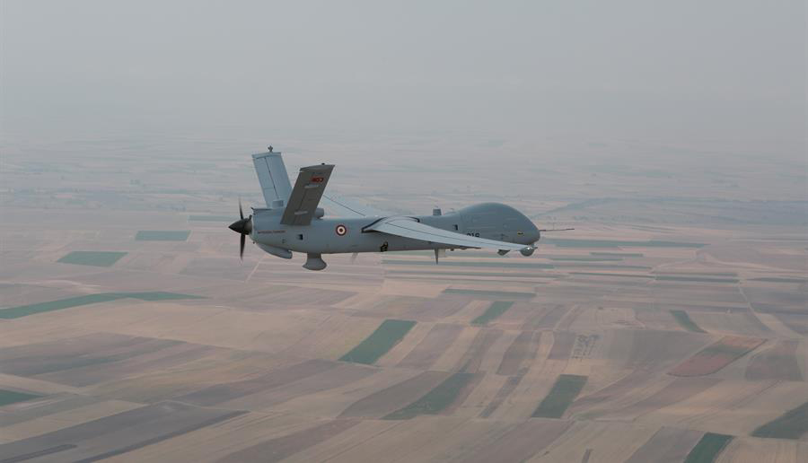

Bir silahsız Anka
- Genel özellikler
- Mürettebat: yok
- Gövde uzunluğu: 8 m
- Kanat açıklığı: 17 m
- Kanat alanı: 13.6 m²
- Kanat Açıklık Oranı - : 22
- Kanat Ok Açısı (çeyrek veter): 0
- Toplam Kalkış Ağırlığı: 1.500 kg
- Yakıt ağırlığı: 250 kg
- Yararlı Yük Ağırlığı: 350 kg
- Motor: 1× Thielert Centurion 2.0 dört-silindirli, turbo dizel, 155 hp (114 kW)(ilk üretimler için)], ve
ya
- 1 × TUSAŞ Motor Sanayii PD170 sıralı 4 silindirli, sıvı soğutmalı ve turboşarjlı dizel motor, 170 hp (127 kW)